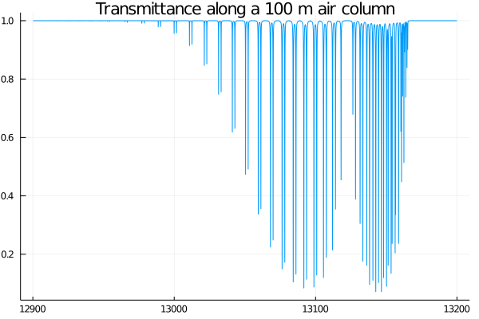

Atmospheric transmittance at the oxygen A-band
The oxygen A-band is a spectral band of molecular oxygen $O_2$ in the wavelength region of about 759 nanometers to 771 nanometers. Molecular oxygen is quite remarkable because its ground state is a triplet configuration for the electrons and as everything would oxidize quite rapidly in our atmosphere if this would not be the case, we should be happy for this fact. The A-band is basically formed by the electronic transition from the ground state to the second excited singlet state in its lowest vibrational state. The band consists of a lot of individual transitions involving different rotational quantum states. For further reading pick your favorite spectroscopy textbook and have a look at the details (it is a rabbit hole with no end... and that's the fun part ;)).
Let's say we want to know the A-band spectrum at standard HITRAN conditions ($T=296\,\text{K}, p=1.0\,\text{atm}$) and what is the maximum transmittance through a 100 m air column. For simplicity we assume that the conditions (and abundance does not change along this air column.
Getting started
We start by loading the module:
julia> using HITRANNow we could specify a database using the function open_database or just stick to the default database. If no database is specified, the package will just use a default database in a file named HITRAN.sqlite in your current environment folder.
Populating the local database
We need line-by-line data, so let's fetch it using:
julia> fetch!("StdAtm", iso_id(["N2", "O2", "CO2", "H2O", "CH4"]), 12900, 13200, [:standard, :ht_self]);
[ Info: No custom HITRAN database specified, opening 'HITRAN.sqlite' (default)Now this command needs some explanation. First of all it is named fetch!with exclamation mark because it modifies the underlying database and is therefore considered "mutating". The parameters are the following:
| parameter | description | example value |
|---|---|---|
name | A user-chosen identifier used as table name in the database | "StdAtm" |
global_iso_ids | A list of global isotopologue IDs. The iso_id function is a convenience function which allows to lookup iso ids by formula (either molecule or isotopologue) or by molecule/local id | iso_id(["N2", "O2", "CO2", "H2O", "CH4"]) |
ν_min | The minimum wavenumber (in $cm^{-1}$) to consider | 12900 |
ν_max | The maximum wavenumber (in $cm^{-1}$) to consider | 13200 |
parameters | A list of HITRAN line parameters to get. As nobody wants to remember these, there are shortcuts defined as symbols. The default HITRAN parameter set can be specified with :standard. In this case we additionally want to fetch the Hartmann-Tran paramters (if available). | [:standard, :ht_self] |
For this example it would be sufficient to just fetch O2 spectral lines as there are only some weak H2O lines in the A-band. But it showcases how a table containing multiple components can be setup.
Now that we have a table called "StdAtm" (for Standard Atmosphere) with some of the more relevant atmospheric constituents, we can already calculate a spectrum. One more important detail: The fetch commands generates a hash of the url used to query the HITRAN database. If you make a consecutive fetch! call with exactly the same parameters, no new download will be initiated. This is also handy because you do not need to comment/uncomment fetch! commands in your code to disable download. As soon as you change the parameters (for example the wavenumber limit) new data will be downloaded.
Calculating a spectrum
The most simple approach would be to just straight away call this command:
julia> wavenumbers, absorption_coefficient = α(
["StdAtm"]
)
(12900.269191:0.01:13199.939191, [1.5702075724459003e-9, 1.2645732207782907e-9, 6.621400181932376e-10, 2.298488788664376e-10, 5.934062986645707e-11, 2.042524549508359e-11, 2.2287515294844767e-11, 5.7494804218645195e-11, 1.7622148848519152e-10, 4.2008554109941483e-10 … 7.637469282195713e-12, 8.439430862262048e-12, 1.0201786628382024e-11, 1.732276760840852e-11, 7.118535885415695e-11, 4.3504722509506906e-10, 2.10240740727121e-9, 6.923195926227655e-9, 1.513416328431426e-8, 2.1838314273811775e-8])As you can see, we get a range of wavenumber values and values for the absorption coefficient right away. But wait, how does the module know the atmospheric composition we are interested in? In short: It does not! If you just specify a table name to the α function it will just calculate all spectral lines withing the table assuming their natural isotopologue abundance and does not take the proper gas mixture into account. See the function description of α for all details. For this example, we can use a neat shortcut:
julia> wavenumbers, absorption_coefficient = α(
["StdAtm"];
components=default_environments[:dry_air]
)
(12900.269191:0.01:13199.939191, [2.881779044856293e-9, 3.2941476682260413e-9, 3.7984241397618126e-9, 4.4223819094078005e-9, 5.203936528840242e-9, 6.1948303924104226e-9, 7.464686435321944e-9, 9.103432761489582e-9, 1.121664006023602e-8, 1.3902677194050732e-8 … 2.7099050815469207e-15, 2.5648307405237103e-15, 2.4311810388361884e-15, 2.3077975646618246e-15, 2.1936633948134005e-15, 2.087883111268415e-15, 1.989665990783674e-15, 1.8983118131017415e-15, 1.813198837634473e-15, 1.7337735829853955e-15])The default_environment variable is a Dict containing standard mixtures. For now this is only dry air by using the key :dry_air. See Environments for details for the environments.
The diluent parameter behaves a little bit differently for HITRAN.jl 0.1.1 and greater and differs from HAPI. The problem with the HAPI diluent specification is that the diluent :self will apply to ALL gases in a mixture and is therefore wrong by design. To fix this, HITRAN.jl can actually work out the diluent itself given a gas mixture. The self portion will be set to abundance specified in components and the air portion is attributed to the remaining fraction. If H2O is part of the mixture the H2O diluent will be set accordingly and the influence of water on the collisional broadening will be taken into account (if the necessary data is supplied by the HITRAN database).
The behaviour of the diluent parameter matches the HAPI behaviour for a single component specification. If you want to calculate a gas mixture, you have to provide a Dict with the molecule/local isotopologue id as key and another Dictas value containing the diluent as usual. It is possible to provide only diluent information for some components, the module will work out the other diluents automatically.
The final code
To sum it all up, the correct code (besides the warning above) for this example is:
julia> wavenumbers, absorption_coefficient = α(["StdAtm"];
components=(default_environments[:dry_air])
)
(12900.269191:0.01:13199.939191, [2.881779044856293e-9, 3.2941476682260413e-9, 3.7984241397618126e-9, 4.4223819094078005e-9, 5.203936528840242e-9, 6.1948303924104226e-9, 7.464686435321944e-9, 9.103432761489582e-9, 1.121664006023602e-8, 1.3902677194050732e-8 … 2.7099050815469207e-15, 2.5648307405237103e-15, 2.4311810388361884e-15, 2.3077975646618246e-15, 2.1936633948134005e-15, 2.087883111268415e-15, 1.989665990783674e-15, 1.8983118131017415e-15, 1.813198837634473e-15, 1.7337735829853955e-15])This specifies that our oxygen is dilutet by the surrounding air mass which tells the module how to properly calculate the collision-broadening of the spectral lines.
To get the transmittance along our air column we can use the little helper function and specifying the air path length in centimeters:
julia> transmittance = transmittance_spectrum(absorption_coefficient, 100e2);Full code & plotting
Let's put everything so far together and create a plot:
using HITRAN, Plots
fetch!("StdAtm", iso_id(["N2", "O2", "CO2", "H2O", "CH4"]), 12900, 13200, [:standard, :ht_self]);
wavenumbers, absorption_coefficient = α(["StdAtm"];
components=default_environments[:dry_air]
)
transmittance = transmittance_spectrum(absorption_coefficient, 100e2)
plot(
wavenumbers,
transmittance,
xlabel="Wavenumbers [1/cm]",
ylabel="Transmission",
title="Transmission along a 100 m air column",
leg=false
)